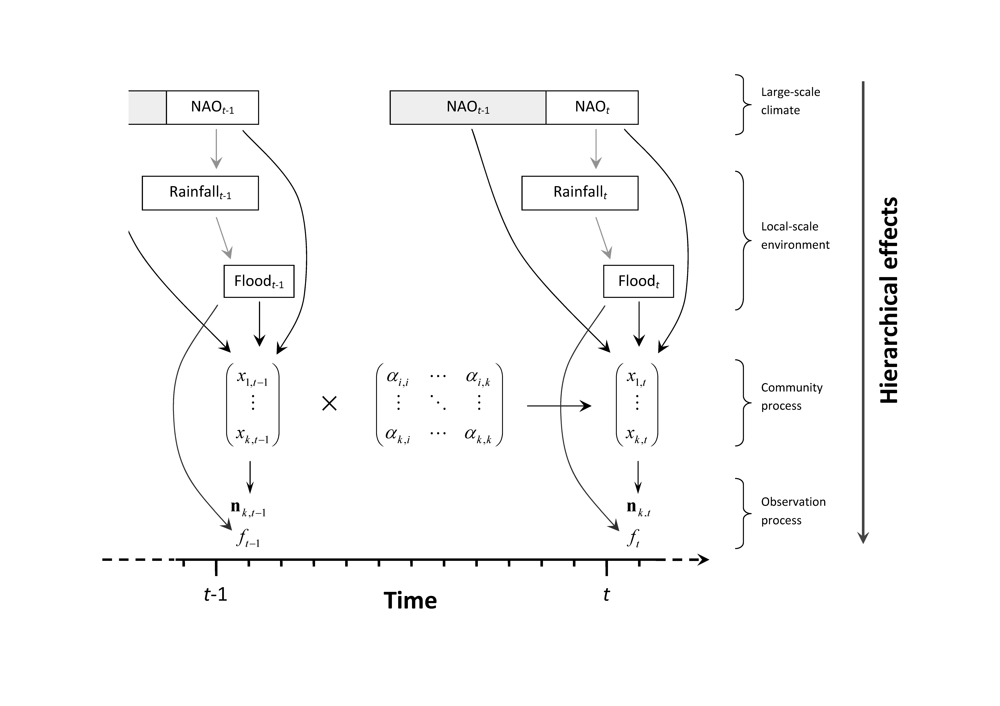

Understanding the impact of environmental variability on migrating species requires the estimation of sequential abiotic effects in different geographic areas across the life cycle. For instance, waterfowl (ducks, geese and swans) usually breed widely dispersed throughout their breeding range and gather in large numbers in their wintering headquarters, but there is a lack of knowledge on the effects of the sequential environmental conditions experienced by migrating birds on the long-term community dynamics at their wintering sites. Here, we analyse multidecadal time-series data of 10 waterfowl species wintering in the Guadalquivir Marshes (SW Spain), the single most important wintering site for waterfowl breeding in Europe. We use a multivariate state-space approach to estimate the effects of biotic interactions, local environmental forcing during winter and large-scale climate during breeding and migration on wintering multispecies abundance fluctuations, while accounting for partial observability (observation error and missing data) in both population and environmental data. The joint effect of local weather and large-scale climate explained 31·6% of variance at the community level, while the variability explained by interspecific interactions was negligible (<5%). In general, abiotic conditions during winter prevailed over conditions experienced during breeding and migration. Across species, a pervasive and coherent nonlinear signal of environmental variability on population dynamics suggests weaker forcing at extreme values of abiotic variables. Modelling missing observations through data augmentation increased the estimated magnitude of environmental forcing by an average 30·1% and reduced the impact of stochasticity by 39·3% when accounting for observation error. Interestingly however, the impact of environmental forcing on community dynamics was underestimated by an average 15·3% and environmental stochasticity overestimated by 14·1% when ignoring both observation error and data augmentation. These results provide a salient example of sequential multiscale environmental forcing in a major migratory bird community, which suggests a demographic link between the breeding and wintering grounds operating through nonlinear environmental effects. Remarkably, this study highlights that modelling observation error in the environmental covariates of an ecological model can be proportionally more important than modelling this source of variance in the population data.

@article{Almaraz2012,
title = {Estimating Partial Observability and Nonlinear Climate Effects on Stochastic Community Dynamics of Migratory Waterfowl},
author = {Almaraz, Pablo and Green, Andy J. and Aguilera, Eduardo and Rend\'on, Miguel A. and Bustamante, Javier},
date = {2012-09},
journaltitle = {Journal of Animal Ecology},
volume = {81},
number = {5},
pages = {1113--1125},
doi = {10.1111/j.1365-2656.2012.01972.x}
}